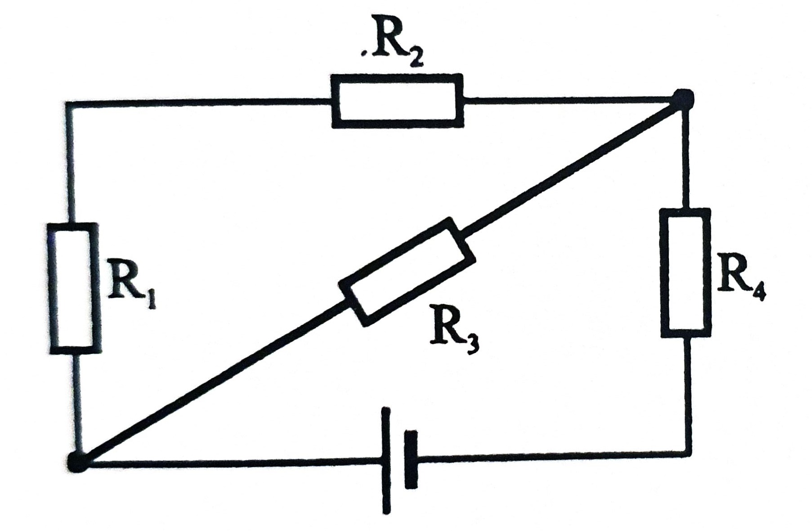

Ohmska tošila
1. Izračunaj ukupni otpor ako je zadano R1= 4 Ohma, R2= 2 Ohma, R3= 3 Ohma i R4= 6 Ohma

2. Koliki je ukupni otpor spoja otpronika R1= 20 Ohma, R2= 80 Ohma, R3= 70 Ohma, R4= 80 Ohma i R5= 12 Ohma

3. Odredite ukupni otpor R u spoju gdje su spojeni R1= 3k Ohma, R2= 3k Ohma, R3= 4k Ohma i R4= 10k Ohma.
4. Otpornici R1= 4 Ohma, R2= 4 Ohma, R3= 6 Ohma, R4= 2 Ohma, R5= 2 Ohma i R6 = 4 čine mješoviti spoj koji je preključen na napon U= 220 V. Odredite struju izvora I te struje I1, I3, I5.

5. Na mrežu napona U= 120 V priključeni su otpornici R1= 40 Ohma, R2= 60 Ohma, R3= 16 Ohma i R4= 120 Ohma. Izračunajte struje I1, I2, I4

6. Mješoviti spoj pet otpornika otpora R1= 12k Ohma, R2= 10k Ohma, R3= 5k Ohma, R4= 35k Ohma, R5= 60k Ohma. Napon izvpora je U= 1800 V. Odredite struje I1, I2, I3 i I4 koje teku kroz otpornike

7. Mješoviti spoj trošila poznatih otpora R1= 14 Ohma, R2= 10 Ohma, R3= 6 Ohma, R4= 18 Ohma, R5= 4 Ohma i R7 = 12 priključeni su na napon izovra U= 90 V. Odredite vrijednost sturuja I1, I3, i I4.

8. Prema shemi spojeni su otpornici pounatih otpora R1= 6 Ohma, R2= 6 Ohma, R3= 6 Ohma, R4= 2 Ohma, R5= 6 Ohma i R7 = 4 Ohma. Struja izvpra I= 9 A. Odredite napon izvora U kao i struje I1, I2, I3 koje koje teku pripadnim granam mreže.

9. Otpornici R1= 1 Ohm, R2= 6 Ohma, R3= 4 Ohma, R4= 3 Ohma, R5= 3 Ohma, R6= 2 Ohma, R7= 4 Ohma spojeni su prema shemi Napon izvora je U= 54 V. Odredite struje koje teku granama strujnog kruga I1, I4, I5.

10. Kolike su snage trošila P2, P6 i P7 ako su otpori trošila R1= 2 Ohma, R2= 1 Ohm, R3= 4 Ohma, R4= 3 Ohma, R5= 5 Ohma R6= 6 Ohma i R7= 4 Ohma spojni su na napon izvora U= 120 V. Odredite Ukupnu snagu mreže P.

11. Električna mreža od tri otpornika poznatih otpora R1= 40 Ohma, R2= 20 Ohma, R3= 30 Ohma spojna je prema shemi na slici. Mreža je prilkučena na napon U. Nađite snagu trošila P1 i P3.

12. Sedam trošila priključeno je na napon izvora U= 180 V prema shemi na slici. Poznati su otpori trošila R1= 6 Ohma, R2= 6 Ohma, R3= 6 Ohma, R4= 2 Ohma, R5= 6 Ohma, R6= 8 Ohma, R7= 4 Ohma. Odredit e snagu na svakom od trošila P1, P2, P3, P4, P5, P6, P7 te snagu mreže P.

13. Izmjerena je struja serijskog spoja I= 5A. Snaga prvog trošila je P1 = 300 W, a otpor drugog trošila je R2 = 18 Ohma Odredite napon izvora U.
14. Razvijena snaga na prvom otporniku je P1= 86.64 W a otpor drugog trošila je R2 = 6 Ohma. Odredite struju izovra I, te struju I1 i snagu drugog trošila.

Kapacitirivna trošila
15. Udredi ukupni kapacitet spoja ako su zadani C1= 40 mikroF, C2= 10 mikroF, C3= 20 mikroF i C4= 3.36 mikroF

16. U mješovitom spoju kondezatora C1= 80 mikroF,C2= 30 mikroF,,C3= 60 mikroF,C4= 60 mikroF,C5= 90 mikroF,C6= 180 mikroF, C7= 100 mikroF odredite kapacitet spoja

17. Kondezatori poznatih kapaciteta C1= 80 nF,C2= 20 nF,C3= 4 nF,C4= 20 nF,C5= 20 nF,C6= 12 nF spojeni prema shemi na izvor napona U= 110 V. Treba odrediti naboj kondezatora C4 i napon na kondezatoru C6

18. Po shemi na slici spojena su tri kondezatora. Poznati su kapacitet prvog C1= 5 mikroF, naboj drugog Q2= 200 mikroC te akumuilrana energija trećeg A3= 750 mikroJ i napon izovra U= 50 V. Odredite kapacitete C2 I C3

19. Tri kondezatora spojna su u seriju. Poznati su kapaciteti C2= 10 nF i C3= 15 nF i napon priključa U= 90 V i napon na kondezatoru C3 U3= 30 V. koliko je kapacitet kondezatora C1.